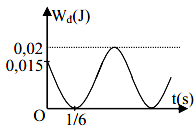
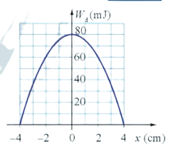
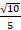
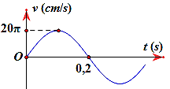

📋 Quy định làm bài
- Thời gian: 45 phút. Còn 10 phút hệ thống nhắc; hết giờ có thêm 5 phút gia hạn rồi tự động nộp.
- Bài làm ở chế độ toàn màn hình. Chuyển tab, mất focus, thoát toàn màn hình đều bị ghi nhận và báo cho giáo viên.
- Không dùng chuột phải, sao chép/dán, phím tắt. Trợ lý AI chỉ mở sau khi nộp bài. Phần tự luận: AI gợi ý điểm, giáo viên duyệt điểm chính thức.
PHẦN I. Câu trắc nghiệm nhiều phương án lựa chọn
Mỗi câu có 4 phương án, chỉ chọn một đáp án đúng (0,25 điểm).
1
Một vật dao động điều hòa theo phương trình $x=8\cos\left(2t+\frac{\pi}{3}\right)\ cm$. Độ dài quỹ đạo của dao động là:
2
Một vật nhỏ DĐĐH theo phương trình $x=A\cos(\omega t+\varphi)$ với $A>0;\omega>0.$ Đại lượng $A$ được gọi là
3
Một chất điểm dao động điều hòa trên trục Ox với chu kì T. Vị trí cân bằng của chất điểm trùng với gốc tọa độ, khoảng thời gian ngắn nhất để nó đi từ vị trí cân bằng (x = 0) đến li độ x = +A là
4
Tần số góc có đơn vị là
5
 Bộ phận giảm xóc trong ôtô là ứng dụng của
Bộ phận giảm xóc trong ôtô là ứng dụng của6
Đối với dao động tuần hoàn, số lần dao động được lặp lại trong một đơn vị thời gian gọi là
7
Biểu thức li độ của vật DĐĐH có dạng $x=A\cos\left(\omega t+\varphi\right)\ (cm)$. Vận tốc của vật có giá trị cực đại là
8
Con lắc đơn có chiều dài l dao động điều hòa tại nơi có gia tốc trọng trường g. Chu kì dao động là
9
Một vật DĐĐH với tần số góc $\omega$ quanh vị trí cân bằng trùng với gốc tọa độ. Khi vật ở vị trí có li độ x thì gia tốc của vật là
10
Chất điểm dao động điều hòa với phương trình $x = 6\cos(10t - 3\pi/2)$ cm. Li độ của chất điểm khi pha dao động bằng $2\pi/3$ là
11
“Có tần số chỉ phụ thuộc vào các đặc tính riêng của hệ mà không phụ thuộc vào các yếu tố môi trường” là khái niệm của hiện tượng nào?
12
Một vật dao động điều hoà, khi vật có li độ 4 cm thì tốc độ là $30\pi$ (cm/s), còn khi vật có li độ 3 cm thì vận tốc là $40\pi$ (cm/s). Biên độ và tần số của dao động là
13
Trạng thái dao động là
14
Một vật nhỏ thực hiện dao động điều hòa với phương trình $x = 10\cos(4\pi t + \pi/2)$ (cm) với t tính bằng giây. Động năng của vật đó biến thiên với chu kì bằng
15
Trong dao động điều hoà, gia tốc biến đổi điều hoà
16
Trong dao động điều hòa, li độ, vận tốc và gia tốc là ba đại lượng biến thiên điều hòa theo thời gian và có
17
Một chất điểm dao động điều hòa dọc theo trục Ox, với O trùng với vị trí cân bằng của chất điểm. Đường biểu diễn sự phụ thuộc li độ chất điểm theo thời gian t cho ở hình vẽ. Phương trình vận tốc của chất điểm là:

18
Tìm phát biểu sai khi nói về dao động điều hoà.
PHẦN II. Câu trắc nghiệm đúng sai
Trong mỗi ý a), b), c), d) chọn Đúng hoặc Sai. Đúng 1 ý: 0,1 · 2 ý: 0,25 · 3 ý: 0,5 · 4 ý: 1,0 điểm.
1
Khi nói về một vật dao động điều hòa
a) Gia tốc biến thiên điều hòa theo thời gian.
b) Động năng của vật không thay đổi theo thời gian.
c) Vận tốc của vật biến thiên điều hòa theo thời gian.
d) Cơ năng của vật biến thiên tuần hoàn theo thời gian.
2
Chu kì dao động là:
a) Số dao động toàn phần vật thực hiện được trong 1 s.
b) Khoảng thời gian để vật đi từ bên này sang bên kia của quỹ đạo chuyển động.
c) Khoảng thời gian ngắn nhất để vật thực hiện một dao động toàn phần.
d) Khoảng thời gian ngắn nhất để vật trở lại trạng thái ban đầu.
3
Một vật có khối lượng 400 g dao động điều hòa có đồ thị động năng như hình vẽ. Tại thời điểm t = 0 vật đang chuyển động theo chiều dương, lấy $\pi^2$ = 10.

a) Cơ năng của vật: W = 0,02 J.
b) Chu kì dao động T = 1 s
c) Tại thời điểm t = 0, vật cách VTCB 1 đoạn bằng 1/3 biên độ
d) Phương trình dao động của vật là: $x = 5\cos\left(\pi t-\frac{\pi}{3}\right)$ cm
4
Đồ thị mô tả sự thay đổi động năng theo li độ của quả cầu có khối lượng 0,4 kg trong một con lắc lò xo treo thẳng đứng như hình vẽ.

a) Từ đồ thị ta thấy tại x = 4 cm thì W = $W_{đmax}$ = 80 mJ
b) Tại x = 2 cm, từ đồ thị ta thấy $W_đ$ = 60 mJ
c) Thế năng tại vị trí x = 2 cm: $W_t$ = 40 mJ.
d) Ta có $v_{max}$ =

(m/s)PHẦN III. Câu trắc nghiệm trả lời ngắn
Điền đáp số (có thể dùng dấu phẩy hoặc dấu chấm thập phân). Mỗi câu 0,25 điểm.
1
Một vật dao động điều hoà theo phương trình: $x = 6\cos\left(\pi t+\frac{\pi}{3}\right)\ cm$  . Toạ độ của chất điểm tại thời điểm t = 5 s bằng bao nhiêu cm?
. Toạ độ của chất điểm tại thời điểm t = 5 s bằng bao nhiêu cm?
. Toạ độ của chất điểm tại thời điểm t = 5 s bằng bao nhiêu cm? cm
2
Một vật có khối lượng m = 100 g DĐĐH có đồ thị biến thiên của li độ theo thời gian như hình bên. Lấy $\pi^2$ = 10. Cơ năng của vật là bao nhiêu J? (kết quả làm tròn đến 2 chữ số thập phân).

J
3
Một con lắc lò xo có độ cứng là 25 N/m dao động cưỡng bức ổn định dưới tác dụng của ngoại lực biến thiên điều hoà với tần số f. Đồ thị biểu diễn sự phụ thuộc của biên độ vào tần số của ngoại lực tác dụng lên hệ có dạng như hình vẽ. Lấy $\pi^{2}=10$. Khối lượng của vật là bao nhiêu gam?

gam
4
Một vật dao động điều hòa với biên độ 6 cm. Mốc thế năng ở vị trí cân bằng. Khi vật có động năng bằng 0,5 lần cơ năng thì vật cách vị trí cân bằng một đoạn bao nhiêu cm? (kết quả làm tròn đến 2 chữ số thập phân).
cm
5
Hình vẽ bên là đồ thị biểu diễn sự phụ thuộc của vận tốc v vào thời gian t của một vật dao động điều hòa. Xác định biên độ dao động của vật? (Theo đơn vị cm).

cm
6
Một người xách một xô nước đi trên đường, mỗi bước đi được 40 cm. Chu kì dao động riêng của nước trong xô là 1 s. Nước trong xô sóng sánh mạnh nhất khi người đó đi với vận tốc là bao nhiêu cm/s?
cm/s